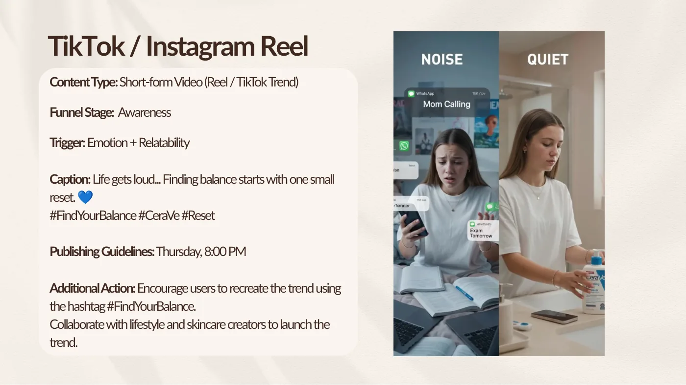
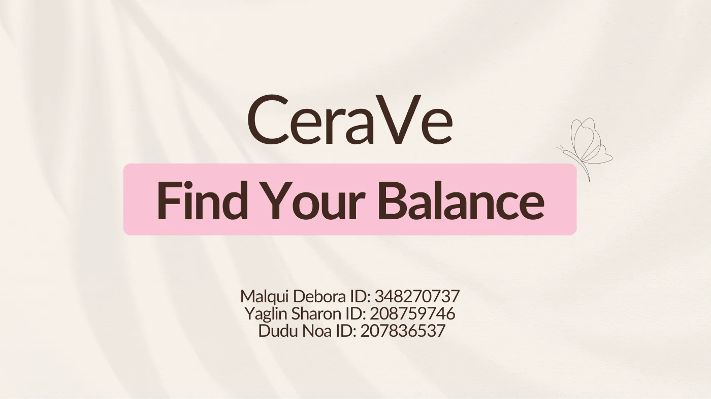
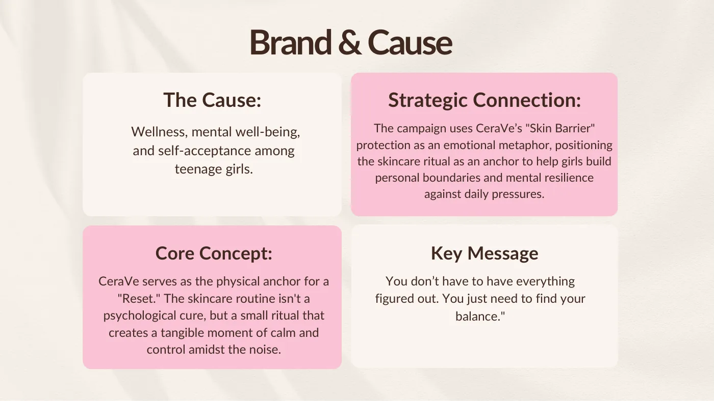
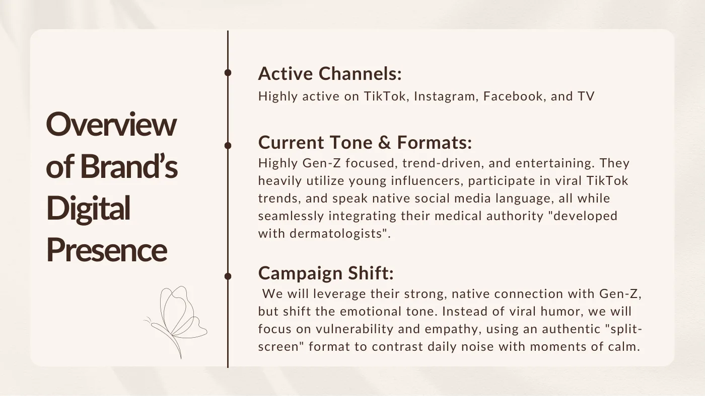
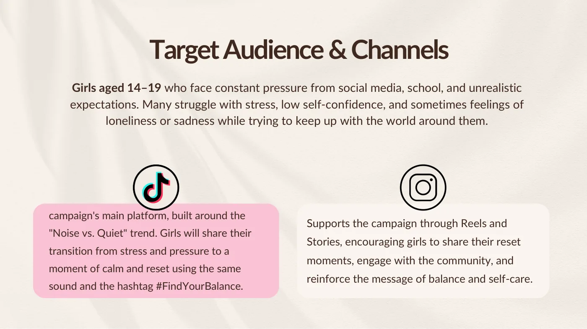
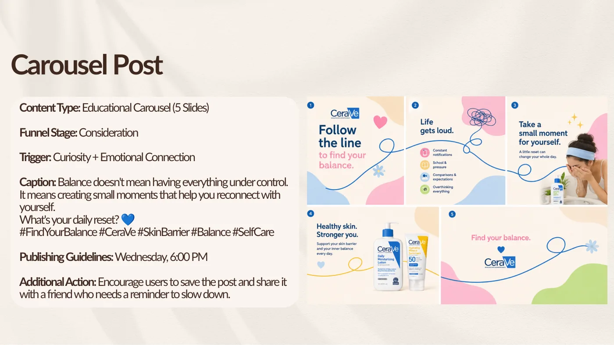
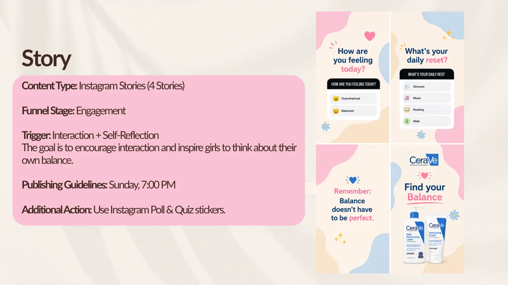
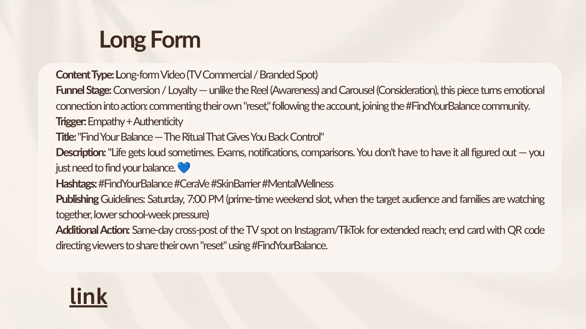
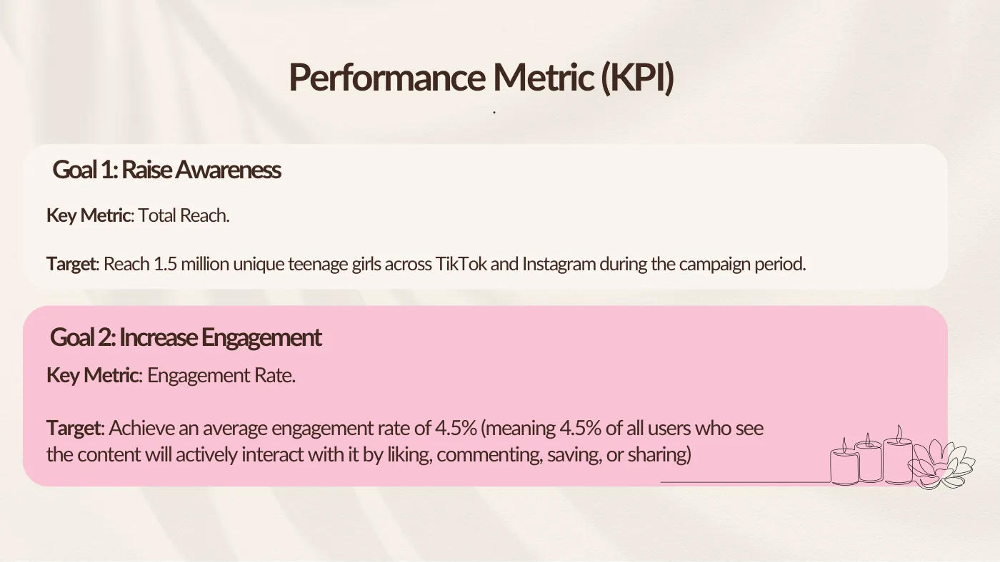

CeraVe «Find Your Balance»: una mini campaña sobre el bienestar de las adolescentes
La consigna: una campaña digital chica para una marca real al servicio de una causa. Elegimos CeraVe y el bienestar emocional de las chicas de 14 a 19 años, y usamos la «barrera de la piel» de la marca como metáfora de los límites personales. Cuatro piezas, una tendencia y dos metas medibles.

Marca y causa
CeraVe es una marca «desarrollada con dermatólogos» que habla el idioma de la generación Z. Su producto protege la barrera de la piel. Ahí está la metáfora: el ritual de cuidado como ancla para construir límites personales y resistencia frente a la presión de todos los días. No es una cura psicológica, es un momento chico de calma y control en medio del ruido. El mensaje: «No tenés que tener todo resuelto. Solo tenés que encontrar tu equilibrio».



Deslizá hacia el costado o usá las flechas. Tocá una captura para ampliarla.
El giro de tono
CeraVe ya tiene una conexión nativa con la generación Z: tendencias, humor, creadores jóvenes. La campaña usa esa conexión pero cambia la emoción. En lugar de humor viral, vulnerabilidad y empatía, con un formato de pantalla dividida que contrasta el ruido diario con un momento de calma. La audiencia: chicas de 14 a 19 años bajo presión de las redes, la escuela y las expectativas. La tendencia «Noise vs. Quiet», con un mismo sonido y la etiqueta #FindYourBalance, es el centro; Instagram la sostiene con reels e historias.

Cuatro piezas, cada una con su etapa y su gatillo
La consigna pedía una pieza larga y tres cortas, cada una con etapa del embudo, gatillo, textos, etiquetas y pauta de publicación. El carrusel educa (consideración; curiosidad y conexión emocional; miércoles 18:00). Las historias hacen participar con encuestas y preguntas (engagement; reflexión; domingo 19:00). El reel abre la tendencia (conocimiento; emoción y cercanía; jueves 20:00, con creadoras de estilo de vida y cuidado de la piel). Y la pieza larga, un spot de TV en el horario central del sábado, convierte la emoción en acción: comentar el propio «reset», seguir la cuenta, sumarse a la comunidad, con un código QR al final y la misma pieza publicada ese día en redes.



Deslizá hacia el costado o usá las flechas. Tocá una captura para ampliarla.
Dos metas, dos indicadores
Conocimiento: alcance total, con la meta de llegar a 1,5 millones de chicas durante la campaña. Participación: tasa de interacción, con la meta de un 4,5 % promedio (de todas las personas que ven el contenido, las que lo guardan, comentan, comparten o le dan me gusta). Dos números que se pueden leer en las propias plataformas.

Qué me llevé
Una causa no se pega a una marca: se encuentra en su producto. La barrera de la piel ya estaba ahí; el trabajo fue leerla como metáfora y darle a cada pieza un lugar en el embudo y un motivo para existir.